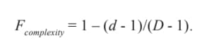
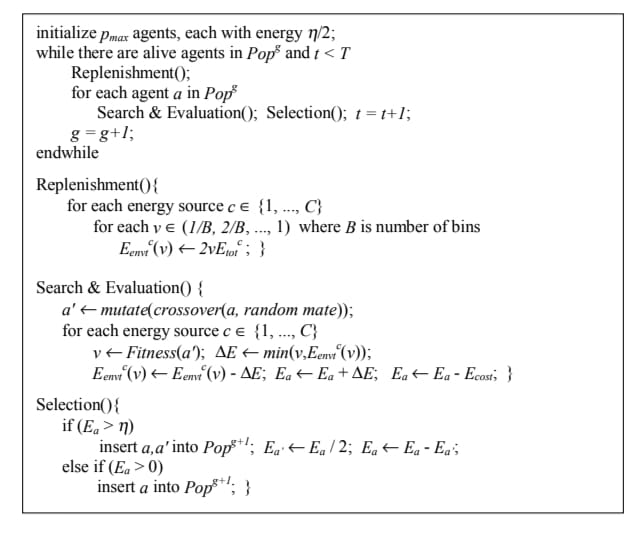
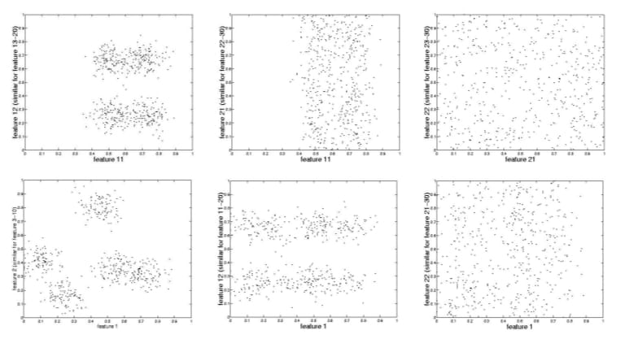
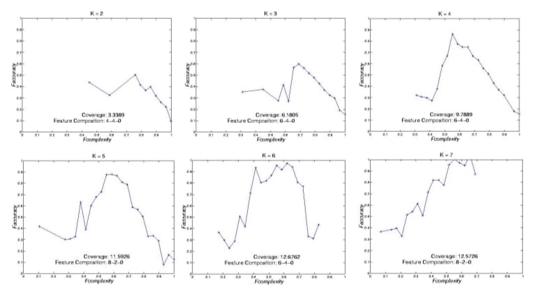
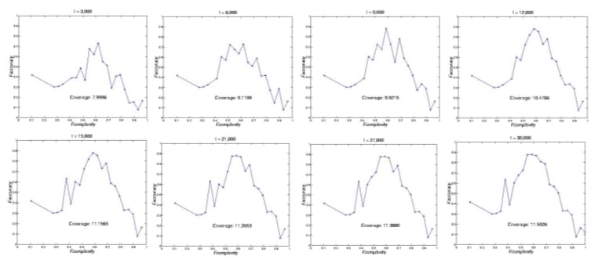
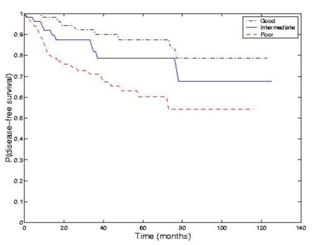

Fcomplexity: The final objective is aimed at finding parsimonious solutions by minimizing the number of selected features:
Note that at least one feature must be used. Other things being equal, we expect that lower complexity will lead to easier interpretability and scalability of the solutions as well as better generalization.
The Wrapper Model of ELSA/EM
We first outline the model of ELSA/EM in Figure 5. In ELSA, each agent (candidate solution) in the population is first initialized with some random solution and an initial reservoir of energy. The representation of an agent consists of (D + Kmax – 2) bits.D bits correspond to the selected features (1 if a feature is selected, 0 otherwise). The remaining bits are a unary representation of the number of clusters.6 This representation is motivated by the desire to preserve the regularity of the number of clusters under the genetic operators; changing any one bit will change K by one.
Mutation and crossover operators are used to explore the search space and are defined in the same way as in previous section. In order to assign energy to a solution, ELSA must be informed of clustering quality. In the experiments described here, the clusters to be evaluated are constructed based on the selected features using the EM algorithm. Each time a new candidate solution is evaluated, the corresponding bit string is parsed to get a feature subset J and a cluster number K. The clustering algorithm is
Figure 5: The pseudo-code of ELSA/EM.
given the projection of the data set onto J, uses it to form K clusters, and returns the fitness values.
Experiments on the Synthetic Data
Data set and baseline algorithm
set, in which the distributions of the points and the significant features are known, while the appropriate clusters in any given feature subspace are not known. The data set has N = 500 points and D = 30 features. It is constructed so that the first 10 features are significant, with five “true” normal clusters consistent across these features. The next 10 features are Gaussian noise, with points randomly and independently assigned to two normal clusters along each of these dimensions. The remaining 10 features are white noise. We evaluate the evolved solutions by their ability to discover five pre-constructed clusters in a 10-dimensional subspace. We present some two-dimensional projections of the synthetic data set in Figure 6. In our experiments, individuals are represented by 36 bits— 30 for the features and 6 for K (Kmax = 8). There are 15 energy bins for all energy sources, Fclusters, Fcomplexity, and Faccuracy. The values for the various ELSA parameters are: Pr(mutation) = 1.0, Pr(crossover) = 0.8, pmax = 100, Ecost = 0.2, Etotal = 40, h = 0.3, and T = 30,000.
Experimental results
We show the candidate fronts found by the ELSA/EM algorithm for each different number of clusters K in Figure 7. We omit the candidate front for K = 8 because of its inferiority in terms of clustering quality and incomplete coverage of the search space. Composition of selected features is shown for Fcomplexity corresponding to 10 features (see text).
Figure 6: A few two-dimensional projections of the synthetic data set.
We analyze whether our ELSA/EM model is able to identify the correct number of clusters based on the shape of the candidate fronts across different values of K and Faccuracy. The shape of the Pareto fronts observed in ELSA/EM is as follows: an ascent in the range of higher values of Fcomplexity (lower complexity), and a descent for lower values of Fcomplexity (higher complexity). This is reasonable because adding additional significant features will have a good effect on the clustering quality with few previously selected features. However, adding noise features will have a negative effect on clustering quality in the probabilistic model, which, unlike Euclidean distance, is not affected by dimensionality. The coverage of the ELSA/EM model shown in Figure 7 is defined as:
We note that the clustering quality and the search space coverage improve as the evolved number of clusters approaches the “true” number of clusters, K = 5. The candidate front for K = 5 not only shows the typical shape we expect, but also an overall improvement in clustering quality. The other fronts do not cover comparable ranges of the feature space either because of the agents’ low Fclusters (K = 7) or because of the agents’ low Faccuracy and Fcomplexity (K = 2 and K = 3). A decision-maker again would conclude the right number of clusters to be five or six.
We note that the first 10 selected features, 0.69 ≤Fcomplexity≤ 1, are not all significant. This notion is again quantified through the number of significant / Gaussian noise / white noise features selected at Fcomplexity = 0.69 (10 features) in Figure 7.7 None of the “white noise” features is selected. We also show snapshots of the ELSA/EM fronts for K = 5 at every 3,000 solution evaluations in Figure 8. ELSA/EM explores a broad subset of the search space, and thus identifies better solutions across Fcomplexity as more solutions are evaluated. We observed similar results for different number of clusters K.
Figure 7: The candidate fronts of ELSA/EM model
Table 3 shows classification accuracy of models formed by both ELSA/EM and the greedy search. We compute accuracy by assigning a class label to each cluster based on the majority class of the points contained in the cluster, and then computing correctness on only those classes, e.g., models with only two clusters are graded on their ability to find two classes. ELSA results represent individuals selected from candidate fronts with less than eight features. ELSA/EM consistently outperforms the greedy search on models with few features and few clusters. For more complex models with more than 10 selected features, the greedy method often shows higher classification accuracy.
Figure 8: Candidate fronts for K = 5 based on Faccuracy evolved in ELSA/EM. It is captured at every 3,000 solution evaluations and two fronts (t = 18,000 and t = 24,000) are omitted because they have the same shape as the ones at t = 15,000 and t = 21,000, respectively.
Table 3: The average classification accuracy (%) with standard error of five runs of ELSA/EM and greedy search. The “-” entry indicates that no solution is found by ELSA/ EM. The last row and column show the number of win-loss-tie (W-L-T) cases of ELSA/ EM compared with greedy search
| K | Number of selected features | |||||||
|---|---|---|---|---|---|---|---|---|
| 2 | 3 | 4 | 5 | 6 | 7 | W-L-T | ||
| 2 | ELSA/EM | 52.6±0.3 | 56.6±0.6 | 92.8±5.2 | 100±0.0 | 100±0.0 | 100±0.0 | 5-0-1 |
| Greedy | 51.8±1.3 | 52.8±0.8 | 55.4±1.1 | 56.6±0.4 | 62.8±3.2 | 80.2±8.5 | ||
| 3 | ELSA/EM | 83.2±4.8 | 52.0±6.6 | 91.6±5.7 | 93.8±6.2 | 99.0±1.0 | 100±0.0 | 4-0-2 |
| Greedy | 40.6±0.3 | 40.8±0.2 | 40.2±0.2 | 63.6±3.8 | 100±0.0 | 100±0.0 | ||
| 4 | ELSA/EM | 46.2±2.2 | - | 50.6±0.6 | 89.6±5.9 | 52.0±1.0 | 60.6±5. | 4-2-0 |
| Greedy | 27.8±0.8 | 27.8±0.4 | 29.0±0.4 | 29.6±0.9 | 38.0±4.4 | 74.2±3.5 | ||
| 5 | ELSA/EM | 44.6±2.0 | 32.6±3.8 | 72.0±3.8 | 62.4±1.9 | 66.4±3.7 | 88.0±4.9 | 5-0-1 |
| Greedy | 23.0±0.4 | 22.2±0.8 | 24.2±0.9 | 23.8±0.5 | 29.6±1.7 | 81.2±3.0 | ||
| W-L-T | 3-0-1 | 3-1-0 | 4-0-0 | 4-0-0 | 3-0-1 | 1-1-2 | 18-2-4 | |
Experiments on WPBC Data
We also tested our algorithm on a real data set, the Wisconsin Prognostic Breast Cancer (WPBC) data (Mangasarian, Street, & Wolberg, 1995). This data set records 30 numeric features quantifying the nuclear grade of breast cancer patients at the University of Wisconsin Hospital, along with two traditional prognostic variables — tumor size and number of positive lymph nodes. This results in a total of 32 features for each of 198 cases. For the experiment, individuals are represented by 38 bits— 32 for the features and 6 for K (Kmax = 8). Other ELSA parameters are the same as those used in the previous experiments.
We analyzed performance on this data set by looking for clinical relevance in the resulting clusters. Specifically, we observe the actual outcome (time to recurrence, or known disease-free time) of the cases in the three clusters. Figure 9 shows the survival characteristics of three prognostic groups found by ELSA/EM. The three groups showed well-separated survival characteristics. Out of 198 patients, 59, 54, and 85 patients belong to the good, intermediate, and poor prognostic groups, respectively. The good prognostic group was welldifferentiated from the intermediate group (p < 0.076), and the intermediate group was significantly different from the poor group (p <0.036). Five-year recurrence rates were 12.61%, 21.26%, and 39.85% for the patients in the three groups. The chosen dimensions by ELSA/EM included a mix of nuclear morphometric features, such as the mean and the standard error of the radius, perimeter, and area, and the largest value of the area and symmetry along three other features.
We note that neither of the traditional medical prognostic factors— tumor size and lymph node status— is chosen. This finding is potentially important because the lymph node status can be determined only after lymph nodes are surgically removed from the patient’s armpit (Street, Mangasarian, & Wolberg, 1995). We further investigate whether other solutions with lymph node information can form three prognostic groups as good as our EM solution.
Figure 9: Estimated survival curves for the three groups found by ELSA/EM.
